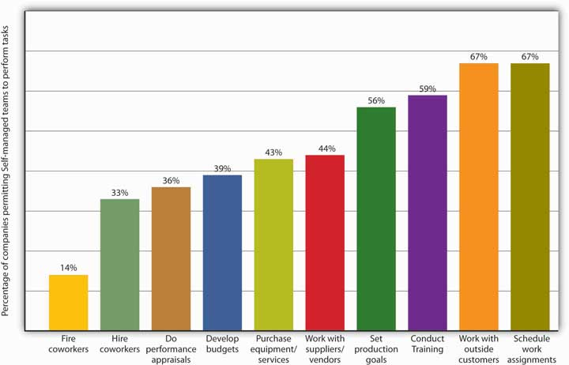

A teamGroup of people with complementary skills who work together to achieve a specific goal. (or a work team) is a group of people with complementary skills who work together to achieve a specific goal.This section is based in part on Leigh L. Thompson, Making the Team: A Guide for Managers (Upper Saddle River, NJ: Pearson Education, 2008), 4. In the case of Motorola’s RAZR team, the specific goal was to develop (and ultimately bring to market) an ultrathin cell phone that would help restore the company’s reputation as a designer of stylistically appealing, high-function phones. The team achieved its goal by integrating specialized but complementary skills in engineering and design and by making the most of its authority to make its own decisions and manage its own operations.
“A group,” suggests Bonnie Edelstein, a consultant in organizational development, “is a bunch of people in an elevator. A team is also a bunch of people in an elevator, but the elevator is broken.” This distinction may be a little oversimplified, but as our tale of teamwork at Motorola reminds us, a team is clearly something more than a mere group of individuals. In particular, members of a group—or, more accurately, a working group—go about their jobs independently and meet primarily to share information. A group of department-store managers, for example, might meet monthly to discuss their progress in cutting plant costs, but each manager is focused on the goals of his or her department because each is held accountable for meeting only those goals. Teams, by contrast, are responsible for achieving specific common goals, and they’re generally empowered to make the decisions needed to complete their authorized tasks.
To keep matters in perspective, let’s identify five key characteristics of work teams:Adapted from Leigh L. Thompson, Making the Team: A Guide for Managers (Upper Saddle River, NJ: Pearson Education, 2008), 4–5. See C. P. Alderfer, “Group and Intergroup Relations,” in Improving Life at Work, ed. J. R. Hackman and J. L. Suttle (Palisades, CA: Goodyear, 1977), 277–96.
Why do major organizations now rely more and more on teams to improve operations? Executives at Xerox have reported that team-based operations are 30 percent more productive than conventional operations. General Mills says that factories organized around team activities are 40 percent more productive than traditionally organized factories. According to in-house studies at Shenandoah Life Insurance, teams have cut case-handling time from twenty-seven to two days and virtually eliminated service complaints. FedEx says that teams reduced service errors (lost packages, incorrect bills) by 13 percent in the first year.Kimball Fisher, Leading Self-Directed Work Teams: A Guide to Developing New Team Leadership Skills, rev. ed. (New York: McGraw-Hill Professional, 1999). See Jerald Greenberg and Robert A. Baron, Behavior in Organizations, 9th ed. (Upper Saddle River, NJ: Pearson Education, 2008), 315–16.
Today it seems obvious that teams can address a variety of challenges in the world of corporate activity. Before we go any further, however, we should remind ourselves that data like those we’ve just cited aren’t necessarily definitive. For one thing, they may not be objective—companies are more likely to report successes than failures. As a matter of fact, teams don’t always work. Indeed, according to one study, team-based projects fail 50 to 70 percent of the time.Jerald Greenberg and Robert A. Baron, Behavior in Organizations, 9th ed. (Upper Saddle River, NJ: Pearson Education, 2008), 316; Leigh L. Thompson, Making the Team: A Guide for Managers (Upper Saddle River, NJ: Pearson Education, 2008), 5.
Research shows that companies build and support teams because of their effect on overall workplace performance, both organizational and individual. If we examine the impact of team-based operations according to a wide range of relevant criteria—including product quality, worker satisfaction, and quality of work life, among others—we find that overall organizational performance improves. Table 8.1 "Effect of Teams on Workplace Performance" lists several areas in which we can analyze workplace performance and indicates the percentage of companies that have reported improvements in each area.
Table 8.1 Effect of Teams on Workplace Performance
| Area of Performance | Percent of Firms Reporting Improvement |
|---|---|
| Product and service quality | 70 |
| Customer service | 67 |
| Worker satisfaction | 66 |
| Quality of work life | 63 |
| Productivity | 61 |
| Competitiveness | 50 |
| Profitability | 45 |
| Absenteeism/turnover | 23 |
Source: Adapted from Edward E. Lawler, S. A. Mohman, and G. E. Ledford, Creating High Performance Organizations: Practices and Results of Employee Involvement and Total Quality in Fortune 1000 Companies (San Francisco: Wiley, 1992). Reprinted with permission of John Wiley & Sons Inc.
Teams, then, can improve company and individual performance in a number of areas. Not all teams, however, are formed to achieve the same goals or charged with the same responsibilities. Nor are they organized in the same way. Some, for instance, are more autonomous than others—less accountable to those higher up in the organization. Some depend on a team leader who’s responsible for defining the team’s goals and making sure that its activities are performed effectively. Others are more or less self-governing: though a leader lays out overall goals and strategies, the team itself chooses and manages the methods by which it pursues its goals and implements its strategies.See Leigh L. Thompson, Making the Team: A Guide for Managers (Upper Saddle River, NJ: Pearson Education, 2008), 8–13. Teams also vary according to their membership. Let’s look at several categories of teams.
As its name implies, in the manager-led teamTeam on which a manager defines goals and methods and is solely responsible for interactions with higher-level management. the manager is the team leader and is in charge of setting team goals, assigning tasks, and monitoring the team’s performance. The individual team members have relatively little autonomy. For example, the key employees of a professional football team (a manager-led team) are highly trained (and highly paid) athletes, but their activities on the field are tightly controlled by a head coach. As team manager, the coach is responsible both for developing the strategies by which the team pursues its goal of winning games and for the final outcome of each game (not to mention the season). He’s also solely responsible for interacting with managers above him in the organization. The players are responsible only for executing plays.Leigh L. Thompson, Making the Team: A Guide for Managers (Upper Saddle River, NJ: Pearson Education, 2008), 9.
Self-managing teamsTeam on which employees control the activities needed to meet overall goals. (also known as self-directed or self-regulating teams) have considerable autonomy. They are usually small and often absorb activities that were once performed by traditional supervisors. A manager or team leader may determine overall goals, but the members of the self-managing team control the activities needed to achieve the goals, such as planning and scheduling work, sharing tasks, meeting quality standards, and handling day-to-day operations.
Self-managing teams are the organizational hallmark of Whole Foods Market, the largest natural-foods grocer in the United States. Each store is run by ten teams (produce, prepared foods, and so forth), and virtually every store employee is a member of a team. Each team has a designated leader and its own performance targets. (Team leaders also belong to a store team, and store-team leaders belong to a regional team.) To do its job, every team has access to the kind of information—including sales and even salary figures—that most companies reserve for the eyes of traditional managers.Charles Fishman, “Whole Foods Is All Teams,” Fast Company.com, December 18, 2007, http://www.fastcompany.com/node/26671/print (accessed October 11, 2011).
Needless to say, not every self-managed team enjoys the same degree of autonomy. Companies vary widely in choosing which tasks teams are allowed to manage and which ones are best left to upper-level management only. As you can see in Figure 8.1 "What Teams Do (and Don’t) Manage", for example, self-managing teams are often allowed to schedule assignments, but they are rarely allowed to fire coworkers.
Figure 8.1 What Teams Do (and Don’t) Manage
Many companies use cross-functional teamsTeam designed to take advantage of the special expertise of members drawn from different functional areas of the organization.—teams that, as the name suggests, cut across an organization’s functional areas (operations, marketing, finance, and so on). A cross-functional team is designed to take advantage of the special expertise of members drawn from different functional areas of the company. When the Internal Revenue Service, for example, wanted to study the effects on employees of a major change in information systems, it created a cross-functional team composed of people from a wide range of departments. The final study reflected expertise in such areas as job analysis, training, change management, industrial psychology, and even ergonomics.Human Technology Inc., “Organizational Learning Strategies: Cross-Functional Teams,” Getting Results through Learning, http://www.humtech.com/opm/grtl/ols/ols3.cfm (accessed October 11, 2011).
Cross-functional teams figure prominently in the product-development process at Nike, where they take advantage of expertise from both inside and outside the company. Typically, team members include not only product designers, marketing specialists, and accountants but also sports-research experts, coaches, athletes, and even consumers. Likewise, Motorola’s RAZR team was a cross-functional team: Responsibility for developing the new product wasn’t passed along from the design team to the engineering team but rather was entrusted to a special team composed of both designers and engineers.
We can also classify the RAZR team as a product-development or project team (a topic we’ll discuss in more detail in Chapter 10 "Product Design and Development"). Committees and task forces, both of which are dedicated to specific issues or tasks, are often cross-functional teams. Problem-solving teams, which are created to study such issues as improving quality or reducing waste, may be either intradepartmental or cross-functional.See Stephen P. Robbins and Timothy A. Judge, Organizational Behavior, 13th ed. (Upper Saddle River, NJ: Pearson Education, 2009), 340–42.
“Teamwork,” said someone (we’re not sure who), “doesn’t tolerate the inconvenience of distance.” Indeed, technology now makes it possible for teams to function not only across such organizational boundaries as functional areas, departments, and divisions but also across time and space, as well. Working in virtual teamsTeams whose geographically dispersed members interact electronically in the process of pursuing a common goal., geographically dispersed members interact electronically in the process of pursuing a common goal. Such technologies as videoconferencing, instant messaging, and electronic meetings, which allow people to interact simultaneously and in real time, offer a number of advantages in conducting the business of a virtual team.See Jennifer M. George and Gareth R. Jones, Understanding and Managing Organizational Behavior, 5th ed. (Upper Saddle River, NJ: Pearson Education, 2008), 381–82. Among other things, members can participate from any location or at any time of day, and teams can “meet” for as long as it takes to achieve a goal or solve a problem—a few days, a few weeks, or a few months.
Nor does team size seem to be an obstacle when it comes to calling virtual-team meetings: In building the F-35 Strike Fighter, U.S. defense contractor Lockheed Martin staked the $225 billion project on a virtual product-team of unprecedented global dimension, drawing on designers and engineers from the ranks of eight international partners ranging from Canada and the United Kingdom to Norway and Turkey.“Lockheed Martin Chooses Mathcad as a Standard Design Package for F-35 Joint Strike Fighter Project,” Adept Science, September 23, 2003, http://www.adeptscience.co.uk/pressroom/article/96 (accessed October 11, 2011).
Work teams have five key characteristics:
Work teams may be of several types:
(AACSB) Analysis
You’re a marketing researcher for a multinational food-products corporation, and for the past two years, you’ve been able to work at home. The international division of the company has asked you to join a virtual team assigned to assess the prospects for a new sandwich planned for the Indian market.
List a few of the challenges that you’re likely to encounter as a member of the virtual team. Explain the steps you’d take to deal with each of the challenges that you’ve listed.